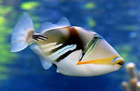
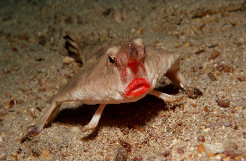
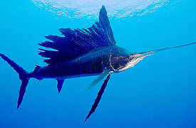
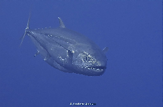

A fishery is an area with an associated fish or aquatic population which is harvested for its commercial value. Fisheries can be wild or farmed. Most of the world's wild fisheries are in the ocean. This article is an overview of ocean fisheries.
The fish of the deep sea
In the nutrient-rich and highly productive coastal regions, massive reproduction is typical of many species, and this ensures their survival. Many deep-sea fish species, on the other hand, are characterized by slow growth, late sexual maturity, long life, and the production of fewer offspring. They are adapted to life at great depths, to a habitat in which unchanging environmental conditions prevail. The strong temperature fluctuations that can impact the reproduction of fish in shallow coastal regions are absent here.
Fisheries in the deep sea
Commercial fishing has only been carried out in deep waters over the past few decades. Although longline fishing has been practised since the 18th century, industrial fishing far out in the ocean first became practicable in the 1950s with the availability of seaworthy refrigeration ships. Deep-sea fishing received a boost in the early 1970s with the introduction of the 200-nautical-mile zone, or Exclusive Economic Zone, which made it impossible for foreign ships to fish close to the coasts of another country. The high seas, including the deep sea, were an alternative fishing area.
- Maldives - Maldives fishing
- Andhaman & nicobar - Andhaman & nicobar fishing
| What can I catch? | ||||
| Fish Name | Description | Size | Tips | Picture |
|---|---|---|---|---|
| triggerfish | Triggerfish are about 40 species of often brightly colored fish of the family Balistidae. Often marked by lines and spots, they inhabit tropical and subtropical oceans throughout the world, with the greatest species richness in the Indo-Pacific. | Triggerfish can grow to be up to 13 pounds, 28 inches fork length (length from the tip of the snout to the center of the fork of the tail), and 16 years old. Males are larger than females. | Triggerfish get their name from spines on the dorsal (back) fins that can be used as a predator defense and for anchoring.Triggerfish is not limited in flavor. The clean white meat that tastes similar to sweet crab meat when cooked will bring a lot of depth and flavor to your fish recipes. Triggerfish might be tricky to catch, but the fight is well worth it. These fish are some of the tastiest you'll ever try. |  |
| batfish | Ogcocephalidae is a family of anglerfish specifically adapted for a benthic lifestyle of crawling about on the seafloor. Ogcocephalid anglerfish are sometimes referred to as batfishes, deep-sea batfishes, handfishes, and seabats. They are found in tropical and subtropical oceans worldwide. | It grows to a size of 60 cm (24 in) in length. | Usually light brown in colour with darker chocolate to black markings, batfish are not considered good eating with most fish being returned to the water. Specimens to 12lb have been encountered although fish to 4-5lb more common in our waters.The body colour of the red-lipped batfish is light brown and greyish on its back, with a white stomach. On the top side, there is usually a dark brown stripe made of brown dots, starting at the head and going all the way down the back to the tail. |  |
| Sailfish | A sailfish is a fish of the genus Istiophorus of billfish living in colder areas of all the seas of the earth. They are predominantly blue to gray in colour and have a characteristic dorsal fin known as a sail, which often stretches the entire length of the back.Sailfish are the fastest fish in the ocean. They've been clocked leaping at more than 68 mph. | These powerful, streamlined beasts can grow to more than 10 feet and weigh up to 220 pounds. | It is not usually a good idea to fry billfish. Swordfish and marlin are best grilled or broiled, or eaten raw as in sashimi. Sailfish and spearfish are somewhat tough and are better cooked over charcoal or smoked.Although there are no reports of unprovoked attacks on humans, swordfish can be very dangerous when provoked and they can jump and use their swords to pierce their target. These fishes are very hard to catch because they are just so damn fast and powerful!. |  |
| Dogtooth tuna | The dogtooth tuna Gymnosarda unicolor, also known as white tuna, is a species of pelagic marine fish which belongs to the family Scombridae.These large size tunas have a streamline shape and a distinctive body coloration: brilliant blue green on the back, silvery on the side and whitish on the belly, with two white tips on the two back fins close to its caudal peduncle. They are always swimming with open jaws. The upper jaw of the large mouth reaches the eye | The dogtooth tuna can reach a length of 190–248 centimetres (75–98 in) in males. and a weight of 130 kg. The average size commonly observed is around 40 to 120 cm. | Of all the worlds tunas, I find the dogtooth tuna (Gymnosarda unicolor) the most interesting species. Firstly they are not technically a “true” tuna, but instead they are the largest of the bonitos Dogtooth Tuna belong to the Mackerel family instead of the tunas. Definatley great eating. Lots of meat on them too. Sashimi, BBQ's, pan fried, cerviche, and damn good smoked too. One reason their appetites are so insatiable is their unusual circulatory system. |  |
Click here to read a great article on how the river is a fishing paradise.